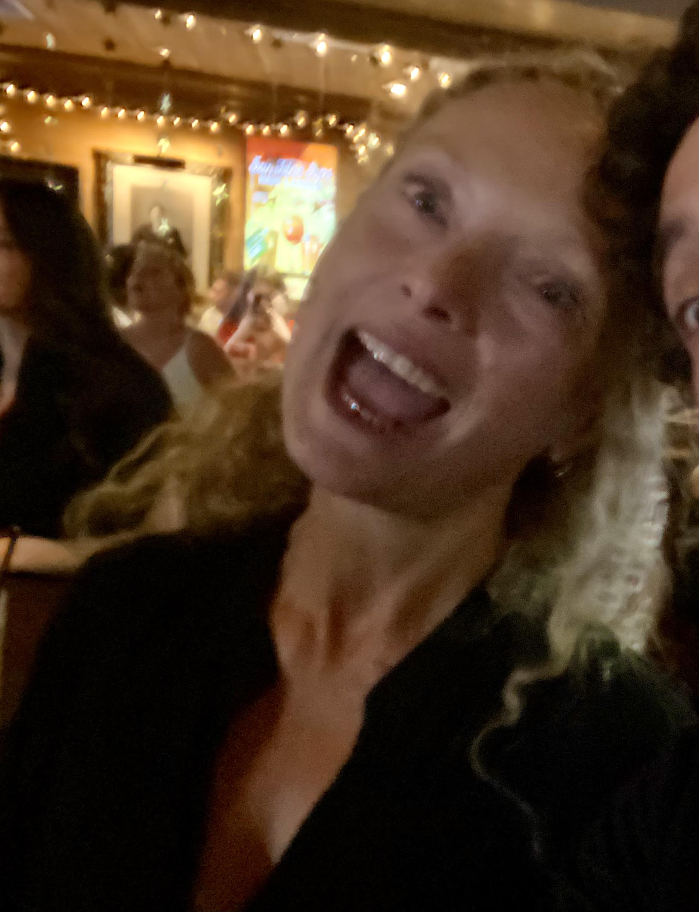

Sophia Burnett
Hi, I'm a linguistic anthropologist interested in the strategies humans deploy to imbue signs with sense, and the shared cultural, sociological, and cognitive priors that allow them to do so. My Ph.D thesis supervised by Julien Longhi and defended in December 2023, proposes a typology of 6 usages of non-standard minuscules in digitally mediated communication, in particular the non-standard 1SG. It draws on a wide interdisciplinary and theoretical base, applying notions such as prosody, indexicality, enregisterment, and iconicity, and combining them with elements of cognitive theory and social psychology to provide a usage profile for each of the six taxa. Jury member and examiner Julie Neveux (Sorbonne) remarked "la thèse soumise par Sophia Burnett est bienvenue car elle contribue à ce domaine scientifique en plein développement"/"The thesis submitted by Sophia Burnett is a welcome contribution to this rapidly developing scientific field". And Jürgen Spitzmüller (Vienna) wrote "The thesis is a very valuable contribution to grapholinguistics, the sociolinguistics of writing and research into digitally mediated (meta-)discourse."
Since my PhD I have been a Teaching and Research Associate (French Public Servant), first at the Université de Lorraine & IDEA laboratory, and since 1st September 2025, l'Université de Toulouse. My research this year is hosted by LAIRDIL laboratory . I am also an associate member of Laboratoire AGORA, CY Cergy Paris.
Research profile
-
Disciplinary anchors:
Linguistic anthropology; computer-mediated discourse analysis; usage-based linguistics (UBL); embodied linguistics; ecolinguistics; cognition; semiotics.
Preferred approaches:
A mixed-methods approach combining quantitative, experimental, and introspective methods for the analysis of situated corpora, with triangulation integrating formal and theoretical linguistics.
Specialist themes:
communicative attenuation; identity; stance; reflexive function; embodiment; social semiotics; morphology; graphophonology; enregisterment; metapragmatics.
Previously
-
Classically trained, I was a professional dancer for fifteen years before joining la Sorbonne Paris 1 and the Conservatoire Européen d'Ecriture Audiovisuelle to study French screenwriting. I then worked as a script doctor and translator for film, TV, and theatre, and as a localization specialist for advertising. I have published a couple of novels, one of which, a historical fiction titled A Useless Mouth has been studied by International section lycéen.nes in France.
Also
-
While I await a more formal academic profile pic, please make do with this one, taken in August at an Irish Pub in Edinburgh during a rousing rendition of The Proclaimers.
News
 DDHUM25 the topic for the year was Text and Multimodal Data Processing for Sustainable Development, and my talk was titled "Digital rewilding for our heritage in the making", in which I propse that since we are faced with such a biased new word processing tool--generative LLMs--our response needs to do away with the linguistic principle of descriptive not prescriptive, and we need to rapidly ensure that ecolinguistic and embodied lexicons remain in circulation; even if we have to reintroduce them artificially. There were some very interesting technical presentations from near and far, so I thank the organisers: Sílvia Araújo (University of Minho), Micaela Aguiar (University of Minho), and Sérgio Serra (Federal University of Rio de Janeiro) for having me!
DDHUM25 the topic for the year was Text and Multimodal Data Processing for Sustainable Development, and my talk was titled "Digital rewilding for our heritage in the making", in which I propse that since we are faced with such a biased new word processing tool--generative LLMs--our response needs to do away with the linguistic principle of descriptive not prescriptive, and we need to rapidly ensure that ecolinguistic and embodied lexicons remain in circulation; even if we have to reintroduce them artificially. There were some very interesting technical presentations from near and far, so I thank the organisers: Sílvia Araújo (University of Minho), Micaela Aguiar (University of Minho), and Sérgio Serra (Federal University of Rio de Janeiro) for having me! I was honoured to have Jean-Marie Klinkenberg for the inaugural episode in French, and Ghil'ad Zuckermann for the second episode which aired early January in English. Do have a listen, they were both excellent guests!